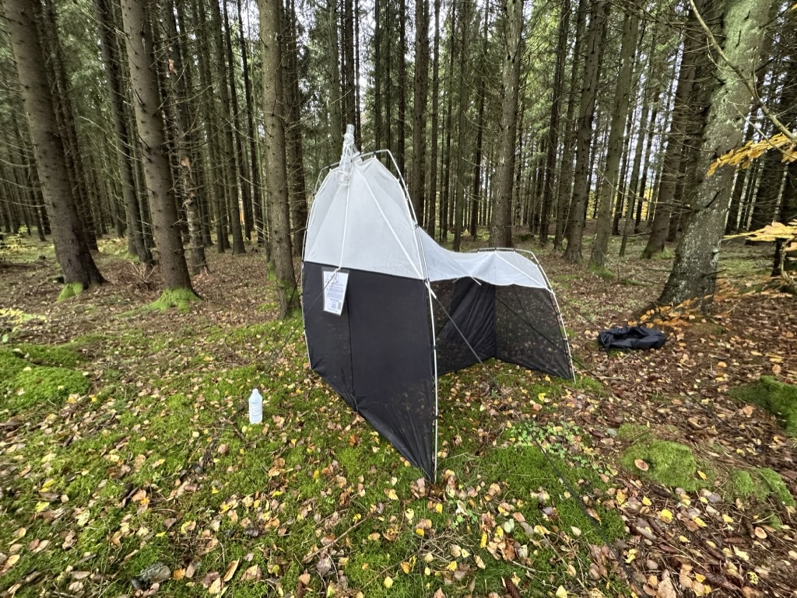

Shared best practices
Guidance for sampling design, contamination control, marker choice, reference matching, and transparent reporting.
The Swedish Metabarcoding Network (SMN) aims to improve the technology readiness of metabarcoding as a tool for effective biodiversity monitoring. We are a network of partners across Sweden who collaborate to develop and share best practices, protocols, and data for metabarcoding in Sweden. This covers all parts of the metabarcoding process, from fieldwork via labwork to data analysis and publication.
Part of our mission is to enable other researchers and non-academic partners to utilize metabarcoding and interpret the resulting biodiversity data. There is a particular emphasis on making existing and newly produced datasets available as FAIR biodiversity data, increasing their utility and impact.

We support harmonized metabarcoding practices across terrestrial, freshwater, and marine environments so biodiversity observations become comparable, reproducible, and reusable.
Guidance for sampling design, contamination control, marker choice, reference matching, and transparent reporting.
FAIR workflows that turn local observations into interoperable biodiversity records through SBDI and ASV portal pipelines.
Workshops, office hours, and peer support across lab, bioinformatics, and data management.
Four pillars that move projects from raw reads to trusted biodiversity knowledge.
Field-to-lab workflows for samples, controls, primer choice, indexing, and robust QC.
Denoising, ASVs/OTUs, chimera handling, taxonomy, and reproducible pipelines.
Metadata, standards, archiving, and publication pathways into national infrastructure.
Cross-site coordination, shared protocol libraries, and national biodiversity roadmapping.
Share metabarcoding data, protocols, propose working groups, or help coordinate training.
If you produce metabarcoding data and are interested in making them FAIR, fill out this short survey.
Quick access to key tools and guidance for metabarcoding projects in Sweden.
Browse and download currently available ASV datasets through the ASV Portal download overview.
Open resource →National infrastructure for open and FAIR biodiversity data, tools, and taxonomies.
Open resource →Sweden's national research infrastructure for life science technologies and expertise.
Open resource →Swedish node of the Global Biodiversity Information Facility for open biodiversity data access and publishing.
Open resource →Bring structure to your research with a secure platform for developing and sharing reproducible methods.
Open resource →Curated protocols for insect metabarcoding workflows, grouped by theme.
Non-destructive, high-throughput workflow from lab setup and sample handling to DNA extraction, library prep and sequencing.
Whole-catch homogenization and magnetic bead purification protocol to recover additional DNA from bulk trap samples.
Design, production and storage of synthetic COI spike-ins as internal controls to improve comparability across samples and experiments.
Hands-on tutorials and user guides for metabarcoding data analysis, formatting, and publishing.
Training sessions focused on biodiversity monitoring, methods, and data publishing.
Training event held during SBDI Days 2026 in Stockholm. A related Hands-on tutorial is available in Resources.